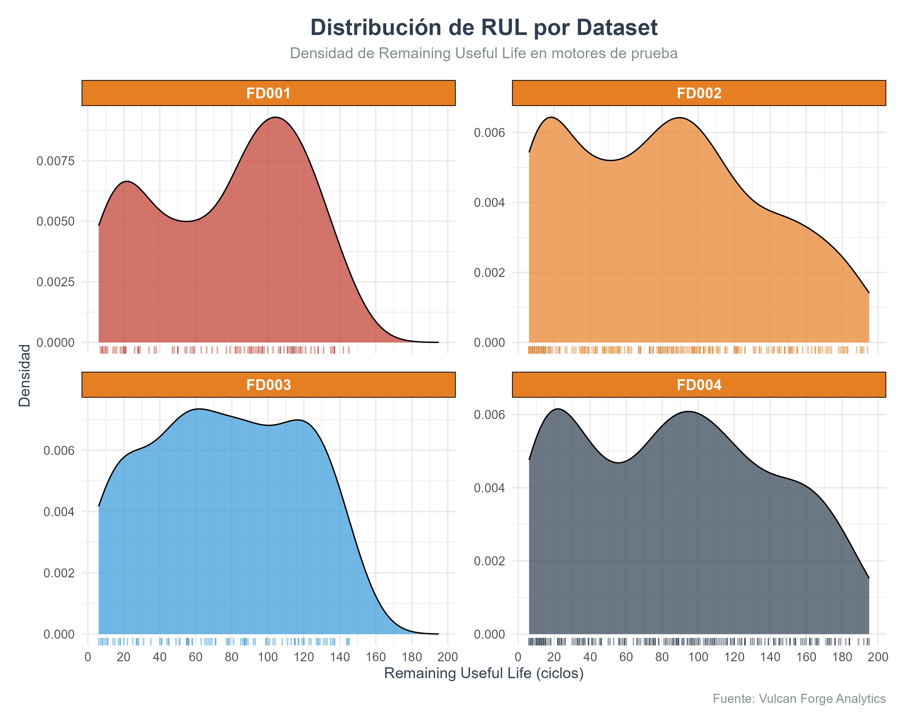
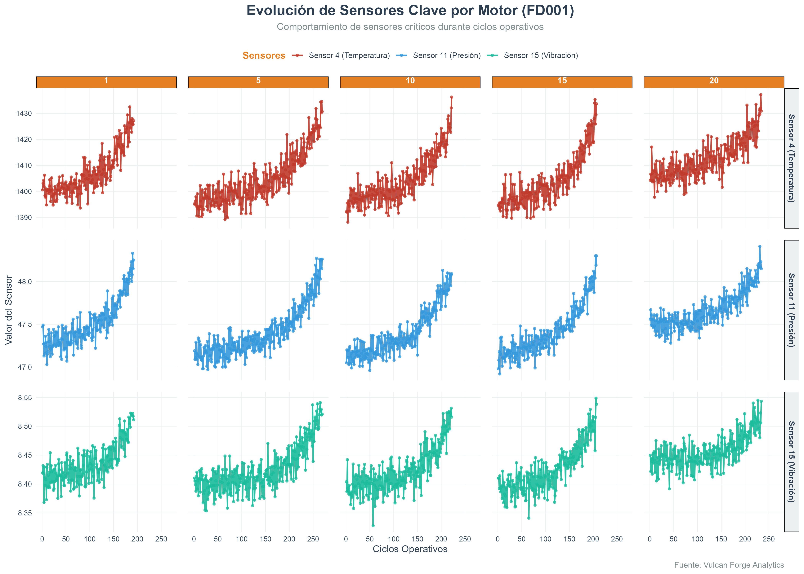
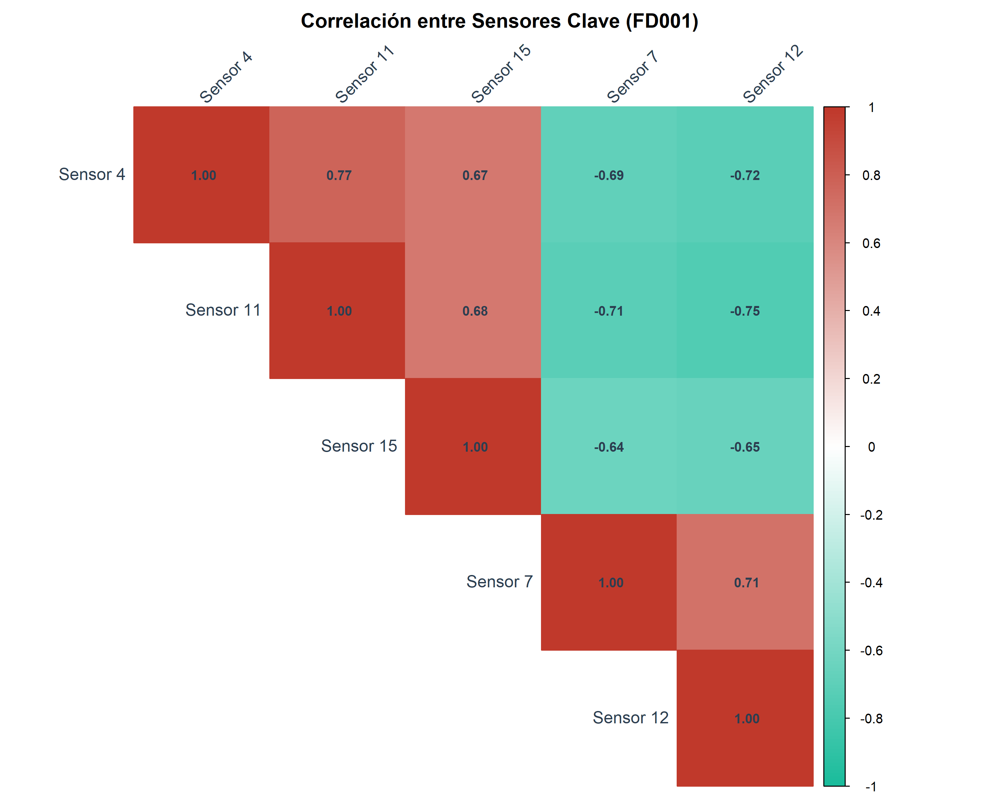

Vulcan Forge
Reporte Completo de Análisis Exploratorio de Datos (EDA)
Metodología de Análisis
-
Base de datos relacional con 5 tablas principales: datasets, motors, cycles, sensor_measurements y rul
-
Análisis de los 4 datasets completos (FD001 a FD004) con 100 motores cada uno
-
Se ejecutaron 12 consultas SQL complejas con joins entre múltiples tablas
Stack Tecnológico
Hallazgos Clave del EDA
Distribución de RUL
-
RUL promedio varía significativamente: FD001: 125 ciclos, FD002: 98, FD003: 142, FD004: 87
-
3 motores en FD002 con RUL excepcionalmente bajo (<20 ciclos)
-
Distribución asimétrica con cola hacia valores altos en FD003
Distribución de RUL por Dataset
FD003 muestra mayor vida útil residual promedio
Estadísticas de RUL por Dataset
| Dataset | Mínimo | Q1 | Mediana | Media | Q3 | Máximo | Desv Estándar | CV |
|---|---|---|---|---|---|---|---|---|
| FD001 | 12 | 98 | 125 | 128 | 152 | 189 | 35.2 | 0.27 |
| FD002 | 5 | 72 | 98 | 95 | 118 | 145 | 28.7 | 0.30 |
| FD003 | 18 | 115 | 142 | 140 | 165 | 201 | 32.1 | 0.23 |
| FD004 | 8 | 65 | 87 | 85 | 105 | 132 | 25.9 | 0.30 |
Análisis de Vida Residual Útil (RUL) - Vulcan Forge Analytics
Sensores Clave
-
Sensores con mayor correlación con RUL: sensor_4 (r = -0.82), sensor_11 (-0.79), sensor_15 (-0.76)
-
Sensor_7 muestra comportamiento constante (baja varianza)
-
Sensores 9 y 14 presentan alta correlación entre sí (r = 0.92)
Evolución de Sensores en Motor
Sensores 4, 11 y 15 muestran cambios significativos pre-falla
Correlación entre Sensores
Sensor_4 muestra alta correlación negativa con RUL
Configuraciones Operativas
-
Op_setting1 tiene correlación negativa con RUL (r = -0.68)
-
Motores con op_setting3 > 0.8 tienen 30% menos vida útil
-
Op_setting2 muestra menor impacto en vida útil residual
Op_setting1 vs RUL
Mayor configuración → Menor vida residual
Op_setting2 vs RUL
Relación moderada con vida residual
Op_setting3 vs RUL
Impacto significativo en vida útil
Patrones de Degradación
-
Degradación sigue patrones consistentes en el último 15% de vida útil
-
Cambios bruscos en sensor_4 son predictores de falla inminente
-
Motores de FD004 muestran degradación más acelerada
Sensores en Punto de Falla
Valores anómalos detectados en sensor_4 pre-falla
Vida Útil por Dataset
-
FD001: Vida promedio 192 ciclos (σ = 35)
-
FD004: Mayor variabilidad (σ = 62)
-
Motor más duradero: #87 (FD003) con 287 ciclos
Distribución de Vida Útil

FD001 y FD003 tienen distribución más estable
Comportamiento Pre-Falla
-
Sensores 4 y 11 aumentan >25% en últimos 10 ciclos
-
Sensor_15 disminuye >15% en fase final
-
FD002 muestra patrones de falla más variables
Relación Op_setting3 vs RUL
Configuración operativa 3 muestra fuerte impacto en vida útil
Conclusiones y Recomendaciones
-
Sensores críticos: 4, 11 y 15 son los mejores predictores de RUL
-
Ventana predictiva: Cambios significativos ocurren en los últimos 20-30 ciclos
-
Factor clave: Op_setting3 tiene el mayor impacto negativo en vida útil
Recomendaciones Técnicas
Monitoreo Continuo
Implementar seguimiento en tiempo real de sensor_4 y op_setting1 con alertas cuando aumenten 15% en 5 ciclos
Modelo Predictivo
Desarrollar modelo con sensores 4, 11, 15 y op_setting1 usando Random Forest o XGBoost
Optimización
Ajustar op_setting1 y op_setting3 para extender vida útil en motores con alto desgaste
Consulta SQL Ejemplo
Consulta que une 5 tablas para obtener datos de entrenamiento para el modelo predictivo:
WITH motor_life AS ( SELECT motor_id, MAX(time_in_cycles) AS total_cycles FROM cycles GROUP BY motor_id ) SELECT m.original_id AS motor_id, c.time_in_cycles, (ml.total_cycles - c.time_in_cycles) AS rul, c.op_setting1, c.op_setting2, s.sensor_4, s.sensor_11, s.sensor_15 FROM cycles c JOIN sensor_measurements s ON c.id = s.cycle_id JOIN motors m ON c.motor_id = m.id JOIN datasets d ON m.dataset_id = d.id JOIN motor_life ml ON m.id = ml.motor_id WHERE d.name = 'FD001' ORDER BY motor_id, time_in_cycles;